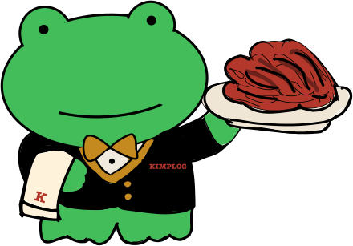

김치 프리미엄, 어디서 생기는 숫자일까
스크롤을 내리면 개구리가 해외 거래소에서 국내 거래소까지 건너가면서, 시세표가 한 줄씩 채워집니다. 다 채워지면 김치 프리미엄이 어떻게 계산되는 숫자인지 보입니다.


같은 코인인데 가격표가 두 장입니다
비트코인은 해외 거래소에서 달러로, 국내 거래소에서 원화로 거래됩니다. 두 가격은 서로 다른 시장에서 각각 매겨지기 때문에, 항상 나란히 움직이지는 않습니다.
그대로는 비교할 수 없습니다
달러로 적힌 가격과 원화로 적힌 가격은 단위가 다릅니다. 두 가격 사이에는 환율이라는 다리가 하나 놓여 있고, 비교하려면 반드시 이 다리를 건너야 합니다.
환율로 옮겨 적으면 기준선이 생깁니다
해외 가격에 환율을 곱하면 "해외 가격을 원화로 옮긴 값"이 나옵니다. 이 값이 국내 가격과 견줘볼 기준선입니다.
국내 가격을 나란히 놓아봅니다
같은 시각 국내 거래소 가격입니다. 이 예시에서는 기준선보다 조금 위에 자리하고 있습니다. 시기에 따라 아래에 놓이기도 합니다.
이 간격을 김치 프리미엄이라고 부릅니다
국내 가격에서 원화 환산가를 뺀 차이를, 다시 환산가로 나눈 비율입니다. 금액이 아니라 비율로 보는 이유는 코인 가격이 오르내려도 같은 잣대로 비교하기 위해서입니다.
국내 가격이 기준선보다 낮은 날에는 이 값이 마이너스가 되고, 흔히 "역프"라고 부릅니다.
환율이 움직이면 기준선도 함께 움직입니다
해외 가격과 국내 가격을 그대로 두고 환율만 1,385원에서 1,410원으로 바꿔보면, 기준선이 위로 올라가면서 두 값의 간격이 좁아집니다.
김프 숫자는 두 거래소 가격뿐 아니라 환율에도 함께 반응합니다. 그래서 이 사이트에서는 김프를 볼 때 환율을 늘 같이 놓고 봅니다.
두 가격이 곧바로 같아지지 않는 배경으로 자주 언급되는 것들입니다. 단정적인 원인이라기보다, 함께 관찰되는 조건에 가깝습니다.
- 국내와 해외 사이에서 자금을 옮기는 데는 시간과 비용, 절차가 따릅니다. 두 시장을 잇는 통로가 좁을수록 간격이 오래 남는 모습이 나타납니다.
- 국내 거래가 특히 활발해지는 시기에는 두 가격의 간격이 함께 벌어지는 모습이 관찰됩니다.
- 간격은 며칠씩 이어지기도 하고, 하루 만에 좁혀지기도 합니다. 방향이나 크기가 미리 정해져 있지는 않습니다.